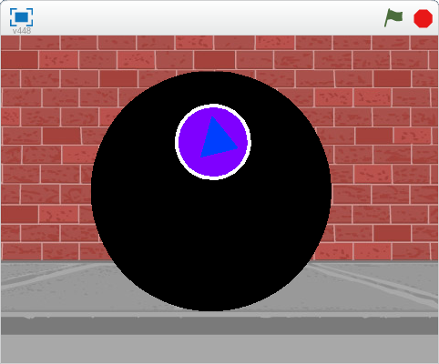
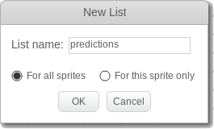
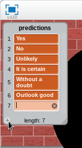
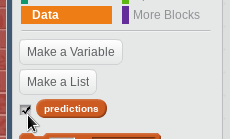
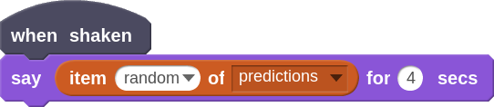
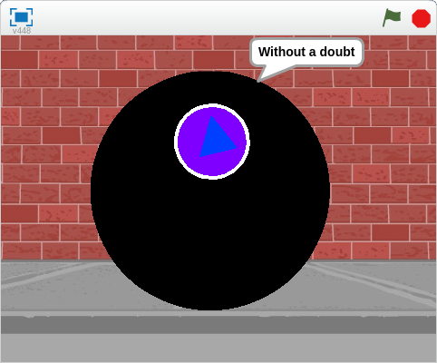

Magic 8 Ball
We are going to design a Magic 8 Ball game that will use the built in tilt sensor on the Arduino 101 board. When we shake the Arduino our Magic 8 Ball will make a prediction.
- Open a Arduino 101 project and design a custom sprite and background for our Magic 8 Ball project.

- Now we need to create a list of predictions, or phrases, that the Magic 8 Ball will pull from when we shake it. With the Magic 8 Ball selected, go to the Data tab and select Make a List. We can name the list something meaningful like "predictions".

- Now fill in the list with the phrases that you want your Magic 8 Ball to say.

- Once you are happy with your list, you can hide the list by unchecking it under the Data tab.

- Now we need to program the 8 Ball to say one of the messages when we shake the Arduino. We can do this by using the when shaken Arduino block along with a say block.

- When you shake the Arduino the Magic 8 Ball should randomly display one of the predictions that you added to your list. If the Magic 8 Ball doesn't respond to the shake, check the indicator light under More blocks. If it is not green, go back to Preparation or Project 1 for help getting connected.

- Now see if you can enhance you Magic 8 Ball project.
Can you:
- Make the Magic 8 Ball shake on the screen when you shake the Arduino?
- Add more unique phrases to the predictions list?
- Decorate the Arduino to make it look like a Magic 8 Ball?
- Advanced: Add a custom sound effect when the Magic 8 Ball is shaken?